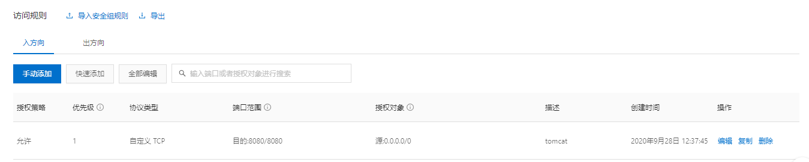

| 硬件/软件 | 版本 |
|---|---|
| 服务器 | 阿里云ECS |
| 操作系统 | CentOS 7.3 64位 |
| JDK | 1.8 |
| Tomcat | 9.0.38 |
| MySQL | 8.0.22 |
| nginx | 1.19.2 |
第一章 服务器1.1 云服务器第二章 Windows安装shell工具2.1 安装xshell6、xftp6第三章 安装JDK3.1 在线yum安装jdk3.2 离线安装jdk第四章 安装tomcat4.1 离线安装tomcat第五章 安装MySQL数据库5.1 卸载原有mariadb数据库5.2 卸载原有mysql数据库5.3 安装 MySQL第六章 安装nginx
第一章 服务器
1.1 云服务器
本文使用的是阿里云服务器，登录阿里云官网购买云服务器ECS，学生身份有优惠，网址如下：
学生(12~24岁默认为学生身份)优惠区：https://www.aliyun.com/minisite/goods?userCode=r3yteowb&ali_trackid=2:mm_20988343_9122653_110031000033:1600150264_178_878403868
选择的操作系统系统为：CentOS 7.3 64位
第二章 Windows安装shell工具
2.1 安装xshell6、xftp6
xshell6、xftp6非商业免费版官网下载地址： https://www.netsarang.com/zh/free-for-home-school/
第三章 安装JDK
3.1 在线yum安装jdk
#注 本系统自带yum，若未安装请先安装yum 或 离线安装jdk(查看3.2)xxxxxxxxxx#1 查看JDK软件包列表yum search java | grep -i --color jdkxxxxxxxxxx#2 选择版本安装（1.8.0）#默认安装目录 （ /usr/lib/jvm ）yum install -y java-1.8.0-openjdk*配置环境变量
xxxxxxxxxx#3 编辑/etc/profile文件vi /etc/profilexxxxxxxxxx#4 进入编辑模式ixxxxxxxxxx#5 在文件末尾处加入下方配置# java环境配置export JAVA_HOME=/usr/lib/jvm/javaexport CLASSPATH=.:$JAVA_HOME/lib/dt.jar:$JAVA_HOME/lib/tools.jar:$JAVA_HOME/jre/lib/rt.jarexport PATH=$PATH:$JAVA_HOME/binxxxxxxxxxx#6 保存退出按ESC键，输入(:wq)，回车xxxxxxxxxx#7 使修改立即生效source /etc/profilexxxxxxxxxx#8 查看版本java -versionxxxxxxxxxx#注 查看JAVA_HOMEecho $JAVA_HOMExxxxxxxxxx#注 查看系统所有jrefind / -name jrexxxxxxxxxx#注 通过yum默认安装时，jdk默认安装在（ /usr/lib/jvm ）目录下，同时会创建一个名为 java 的软链接（类似于wimdows的快捷方式），指向jdk主目录（注：本文jdk主目录为：/usr/lib/jvm/java-1.8.0-openjdk-1.8.0.262.b10-0.el7_8.x86_64），即配置jdk环境变量时可直接把 JAVA_HOME 配置为 /usr/lib/jvm/java
3.2 离线安装jdk
xxxxxxxxxx#1 官网下载jdk源码包官网jdk各版本列表：https://www.oracle.com/java/technologies/javase-downloads.html
官网jdk1.8下载地址（需要登录，可注册一个）：https://www.oracle.com/java/technologies/javase/javase-jdk8-downloads.html
百度网盘链接：https://pan.baidu.com/s/1PL--IoerItRJBXx2lIEEtw 提取码：jdk8
xxxxxxxxxx#注 本文下载的是：server-jre-8u261-linux-x64.tar.gz上传至服务器
xxxxxxxxxx#注 下方方法时通过 lrzsz 上传文件，如若Linux没安装lrzsz请先安装或可直接通过xftp上传yum install lrzszxxxxxxxxxx#2 创建jdk安装目录 /usr/local/java (已存在，请忽略)mkdir /usr/local/javaxxxxxxxxxx#3 进入 /usr/local/java 目录cd /usr/local/javaxxxxxxxxxx#4 rz命令上传jdk至服务器（或通过xftp上传）rz解压
xxxxxxxxxx#5 解压tar -zxvf server-jre-8u261-linux-x64.tar.gzxxxxxxxxxx#注 解压后为 jdk1.8.0_261配置环境变量
xxxxxxxxxx#6 编辑/etc/profile文件vi /etc/profilexxxxxxxxxx#7 进入编辑模式ixxxxxxxxxx#8 在文件末尾处加入下方配置# java环境配置export JAVA_HOME=/usr/local/java/jdk1.8.0_261export CLASSPATH=.:$JAVA_HOME/lib/dt.jar:$JAVA_HOME/lib/tools.jar:$JAVA_HOME/jre/lib/rt.jarexport PATH=$PATH:$JAVA_HOME/binxxxxxxxxxx#9 保存退出按ESC键，输入(:wq)，回车xxxxxxxxxx#10 使修改立即生效source /etc/profilexxxxxxxxxx#11 查看版本java -version
第四章 安装tomcat
4.1 离线安装tomcat
xxxxxxxxxx#1 官网下载tomcat安装包官网网址：https://tomcat.apache.org/download-90.cgi
Tomcat 9.0.38下载地址：https://mirrors.bfsu.edu.cn/apache/tomcat/tomcat-9/v9.0.38/bin/apache-tomcat-9.0.38.tar.gz
百度网盘链接：https://pan.baidu.com/s/1_Fuhxo5HTIfM5FpGEztYcQ 提取码：Tom9
xxxxxxxxxx#注 本文下载的是：apache-tomcat-9.0.38.tar.gzxxxxxxxxxx#2 创建tomcat预安装目录 /usr/local/tomcat (已存在，请忽略)mkdir /usr/local/tomcatxxxxxxxxxx#3 进入tomcat预安装目录cd /usr/local/tomcatxxxxxxxxxx#4 rz命令上传tomcat安装包至服务器（或通过xftp上传）rzxxxxxxxxxx#5 解压tar -zxvf apache-tomcat-9.0.38.tar.gz启动Tomcat
xxxxxxxxxx#5 进入tomcat主目录-》bin目录cd /usr/local/tomcat/apache-tomcat-9.0.38/binxxxxxxxxxx#6 启动tomcat./startup.shxxxxxxxxxx# 7 开放服务器8080端口
xxxxxxxxxx#8 访问Tomcat首页(成功会看到Tomcat信息页)浏览器输入：http://(ip地址):8080/x#注 如果访问不到tomcat首页，可能是防火墙拦截了请求，解决办法如下：#方法一 关闭防火墙（不安全）systemctl stop firewalld#方法二 开启防火墙，然后开放8080端口（推荐）#开启防火墙systemctl start firewalld#开放8080端口 --permanent表示永久有效firewall-cmd --zone=public --add-port=8080/tcp --permanent关闭Tomcat
xxxxxxxxxx#9 进入tomcat主目录-》bin目录cd /usr/local/tomcat/apache-tomcat-9.0.38/binxxxxxxxxxx#10 关闭./shutdown.sh
第五章 安装MySQL数据库
5.1 卸载原有mariadb数据库
xxxxxxxxxx#注 有的centos7默认安装了mariadb数据库，需卸载xxxxxxxxxx#1 检查是否安装了mariadb数据库rpm -qa | grep mariadbxxxxxxxxxx#2 卸载mariadb数据库rpm -e --nodeps mariadb-libs-5.5.65-1.el7.x86_64
5.2 卸载原有mysql数据库
xxxxxxxxxx#1 检查是否安装了mysql数据库rpm -qa|grep -i mysql#2 卸载mysqlrpm -e --nodeps 包名 #3 查找mysql相关文件夹find / -name mysql#4 删除所有mysql文件夹及文件rm -rf 文件夹名#5 删除 /etc/my.ini 文件rm -rf /etc/my.ini#注 最后检查是否删尽
5.3 安装 MySQL
xxxxxxxxxx#1 官网下载MySQL安装包官网下载地址（最新版）：https://dev.mysql.com/downloads/mysql/
官网下载地址（存档版）：https://downloads.mysql.com/archives/community/
百度网盘链接：https://pan.baidu.com/s/1fWxPBj8wmzJ0WebNpNo-yg 提取码：sql8
xxxxxxxxxx#注 本文下载的是最新版本（8.0.22）如下：
上传至服务器 、解压
xxxxxxxxxx#2 创建MySQL预安装目录 /usr/local/mysql （已存在，请忽略）mkdir /usr/local/mysqlxxxxxxxxxx#3 进入MySQL预安装目录 /usr/local/mysqlcd /usr/local/mysqlxxxxxxxxxx#4 rz命令将MySQL安装包上传至服务器 /usr/local/mysql (或通过xftp上传)rzxxxxxxxxxx#5 解压tar -xvJf mysql-8.0.22-linux-glibc2.12-x86_64.tar.xz添加配置文件my.cnf
xxxxxxxxxx#6 修改文件夹名称，改为mysql-8.0.22mv mysql-8.0.22-linux-glibc2.12-x86_64 mysql-8.0.22xxxxxxxxxx#7 添加配置文件my.cnfvi /etc/my.cnfxxxxxxxxxx#8 进入编辑模式ixxxxxxxxxx#9 文件增加如下内容[client]port=3306socket=/var/lib/mysql/mysql.sock [mysqld]port=3306user=mysqlsocket=/var/lib/mysql/mysql.sockbasedir=/usr/local/mysql/mysql-8.0.22datadir=/usr/local/mysql/mysql-8.0.22/data xxxxxxxxxx#10 保存退出按Esc,输入（:wq）,回车创建socket目录、组、用户
xxxxxxxxxx#11 创建socket目录mkdir /var/lib/mysqlxxxxxxxxxx#注 如果my.ini中配置的socket目录不存在的话，启动MySQL是会报如下错误：mysqld_safe Directory '/var/lib/mysql' for UNIX socket file don't exists.
xxxxxxxxxx#12 给socket目录授权chown -R mysql:mysql /var/lib/mysqlxxxxxxxxxx#13 创建组groupadd mysqlxxxxxxxxxx#14 添加用户useradd -g mysql mysql初始化MySQL
xxxxxxxxxx#15 yum 安装 libaioyum install libaio-devel.x86_64xxxxxxxxxx#注 如果缺少libaio库，下一步初始化MySQL时将出现以下错误：/usr/local/mysql/mysql-8.0.22/bin/mysqld: error while loading shared libraries: libaio.so.1: cannot open shared object file: No such file or directory
xxxxxxxxxx#16 初始化mysql/usr/local/mysql/mysql-8.0.22/bin/mysqld --initialize --user=mysql --basedir=/usr/local/mysql/mysql-8.0.22 --datadir=/usr/local/mysql/mysql-8.0.22/data/xxxxxxxxxx#17 初始化完成会生成临时密码，请记录保存好:
修改mysql.server文件
xxxxxxxxxx#18 打开mysql主目录》support-files》mysql.server文件vi /usr/local/mysql/mysql-8.0.22/support-files/mysql.serverxxxxxxxxxx#19 在mysql.server文件中找到 “basedir= datadir=” ,填入mysql主目录与数据保存目录basedir=/usr/local/mysql/mysql-8.0.22datadir=/usr/local/mysql/mysql-8.0.22/dataxxxxxxxxxx#20 保存退出按Esc,输入（:wq）,回车启动MySQL
xxxxxxxxxx#21 进入mysql主目录》support-files目录cd /usr/local/mysql/mysql-8.0.22/support-filesxxxxxxxxxx#22 启动./mysql.server start登录MySQL
xxxxxxxxxx#23 进入进入mysql主目录》bin目录cd /usr/local/mysql/mysql-8.0.22/binxxxxxxxxxx#24 登录./mysql -u root -pxxxxxxxxxx#25 输入初始化时生成的初始密码xxxxxxxxxx#注 输入密码不会有反应，其实已经输入，输完直接回车，可复制粘贴xxxxxxxxxx#26 修改密码（sql语句）ALTER USER 'root'@'localhost' IDENTIFIED BY '新密码';xxxxxxxxxx#27 修改加密方式（sql语句）ALTER USER 'root'@'%' IDENTIFIED WITH mysql_native_password BY '新密码';xxxxxxxxxx#注 如果不修改加密方式，使用SQLyog远程连接时会出现下列错误：plugin caching_sha2_password could not be loaded xxxxxxxxxx#28 开启远程访问（sql语句）use mysql;update user set host='%' where user='root';xxxxxxxxxx#29 刷新，使之立即生效（或者重启mysql）（sql语句）flush privileges;xxxxxxxxxx#30 防火墙开放3306端口（如果开启了防火墙）firewall-cmd --zone=public --add-port=3306/tcp --permanentxxxxxxxxxx#31 重启防火墙systemctl restart firewalldxxxxxxxxxx#注 查看防火墙端口开放列表firewall-cmd --list-portsxxxxxxxxxx#32 开放服务器3306端口
xxxxxxxxxx#33 使用SQLyog远程连接，连接成功，完毕
第六章 安装nginx
下载、上传、解压
xxxxxxxxxx#1 官网下载合适版本的nginx安装包官网下载地址：https://nginx.org/download/
xxxxxxxxxx#注 本文下载的是：nginx-1.19.2.tar.gzxxxxxxxxxx#2 创建nginx预安装目录 /usr/local/nginx (已存在，请忽略)mkdir /usr/local/nginxxxxxxxxxxx#3 进入预安装目录 /usr/local/nginxcd /usr/local/nginxxxxxxxxxxx#4 rz命令上传至服务器（或通过xftp上传）rzxxxxxxxxxx#5 解压tar -zvxf nginx-1.19.2.tar.gz安装PCRE
xxxxxxxxxx#6 下载PCRE安装包pcre-8.44下载地址： https://sourceforge.net/projects/pcre/files/pcre/8.44/pcre-8.44.tar.gz/download
xxxxxxxxxx#7 创建PCRE预安装目录 /usr/local/pcre（已存在，请忽略）mkdir /usr/local/pcrexxxxxxxxxx#8 进入PCRE预安装目录 /usr/local/pcrecd /usr/local/pcrexxxxxxxxxx#9 rz命令上传pcre安装包至服务器（或通过xftp上传）rzxxxxxxxxxx#10 解压tar -zvxf pcre-8.44.tar.gzxxxxxxxxxx#11 进入pcre主目录cd /usr/local/pcre/pcre-8.44xxxxxxxxxx#12 初始化pcre./configurexxxxxxxxxx#注 如果系统缺失gcc-c++库,初始化时会出现错误如下：configure: error: Invalid C++ compiler or C++ compiler flagsxxxxxxxxxx#13 yum安装gccyum install -y gcc-c++xxxxxxxxxx#14 编译pcremakexxxxxxxxxx#15 安装pcremake installxxxxxxxxxx#注 查看版本号，输出8.44 pcre安装成功pcre-config --version安装 依赖组件 zlib-devel
xxxxxxxxxx#16 yum安装zlib-develyum install -y zlib-develxxxxxxxxxx#注 系统缺少zlib-devel库，nginx 初始化执行. /configure时会报错，如下：./configure: error: the HTTP gzip module requires the zlib library.安装 nginx
xxxxxxxxxx#17 进入nginx解压目录cd /home/nginx/nginx-1.19.2xxxxxxxxxx#18 初始化nginx./configurexxxxxxxxxx#19 编译makexxxxxxxxxx#20安装,默认安装目录为 /usr/local/nginxmake install启动nginx
xxxxxxxxxx#21 进入nginx安装目录（默认/usr/local/nginx）下的sbin目录cd /usr/local/nginx/sbinxxxxxxxxxx#22 启动nginx./nginxxxxxxxxxxx#注 启动时如果报错：nginx: [emerg] bind() to 0.0.0.0:80 failed (98: Address already in use)#说明80端口被占用，解决办法，关闭80端口的应用或修改nginx配置文件修改端口号访问nginx首页
xxxxxxxxxx#注 浏览器输入http://ip地址，出现nginx欢迎页面，则启动成功
关闭nginx
xxxxxxxxxx#23 查看进程号ps -ef|grep nginxxxxxxxxxxx#24 杀死进程（进程后有 ./nginx 标识）kill -QUIT 进程号